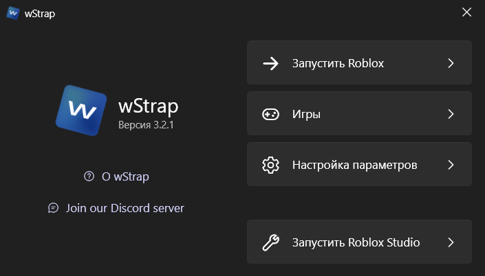
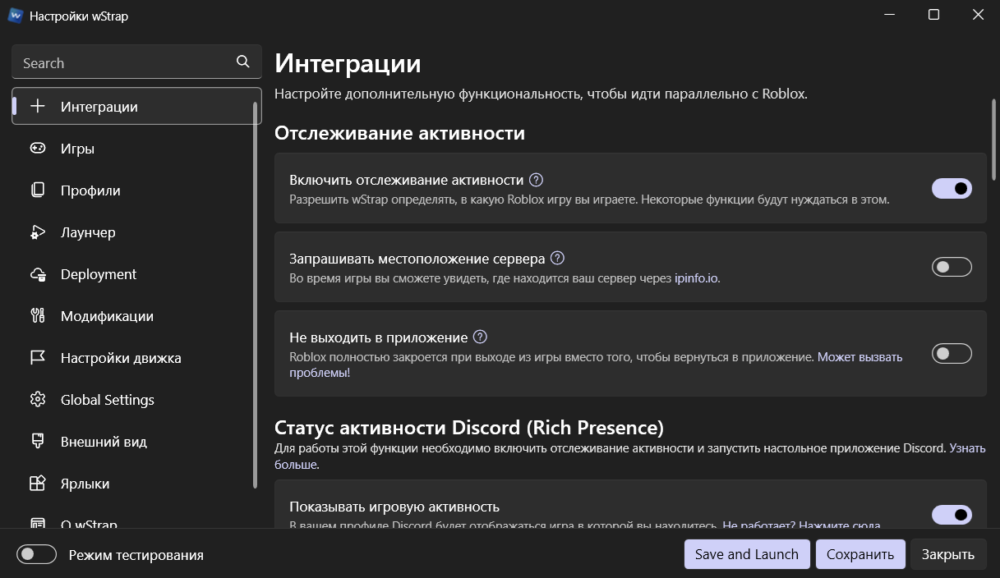
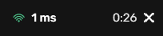
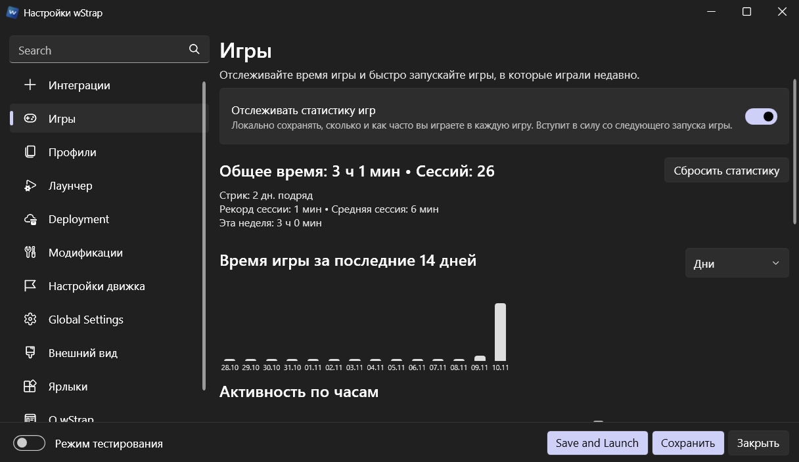
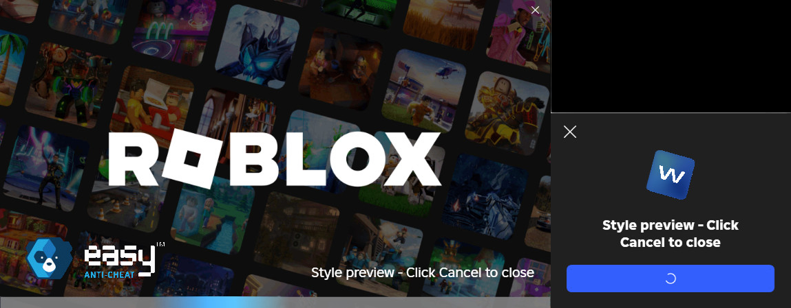
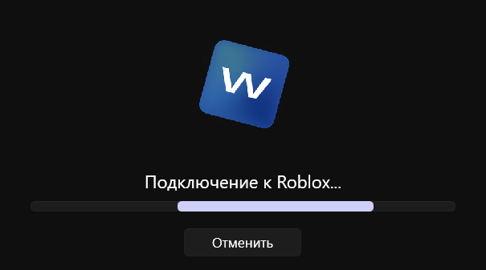
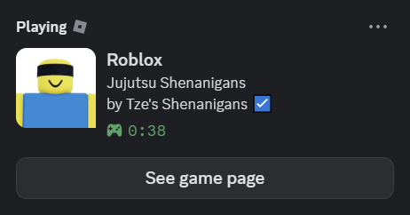

Альтернатива обычному бутстрапперу Roblox — с оверлеем, пингом, профилями и статистикой, которых в обычном клиенте нет.
wStrap.exe — запусти и следуй мастеру

Немного из того, что wStrap добавляет поверх обычного бутстраппера Roblox
Интерфейс на WPF UI: аккуратные настройки без лишней сложности — от флагов до темы загрузчика.

Круглая пилюля поверх игры: пинг до сервера в реальном времени, таймер сессии и цветовой индикатор качества связи. Клик — меню с rejoin, скриншотом и инвайтом.

Профили настроек в один клик, часы по дням и месяцам, тепловая карта активности, рекорды сессий и достижения — всё считается локально.

Окно загрузки в стиле Roblox: превью темы, прогресс и отмена — не голый прогресс-бар из нулевых.

Подключение к Roblox занимает секунды — без лишних окон и ожидания.

Ссылка-инвайт на текущий сервер копируется из оверлея одним кликом — друг заходит к тебе, даже без wStrap.
Показывает в Discord, во что ты играешь — с картинкой игры, таймером и кнопкой присоединиться. Поддерживает BloxstrapRPC.

Коротко и честно о самом популярном
wStrap.exe — скачивай со страницы релизов на GitHub (кнопка «Скачать» сверху). Установщик настроит всё сам.